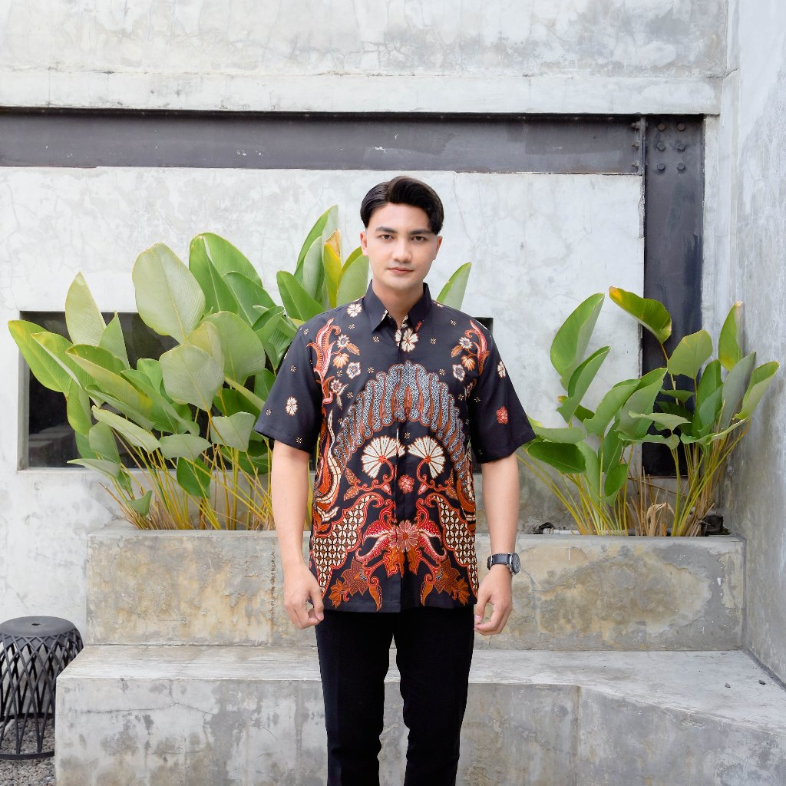
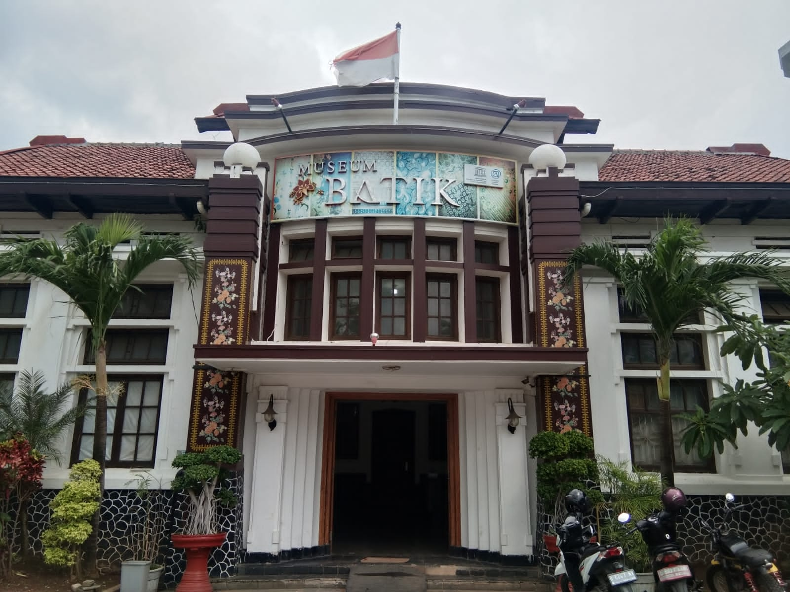
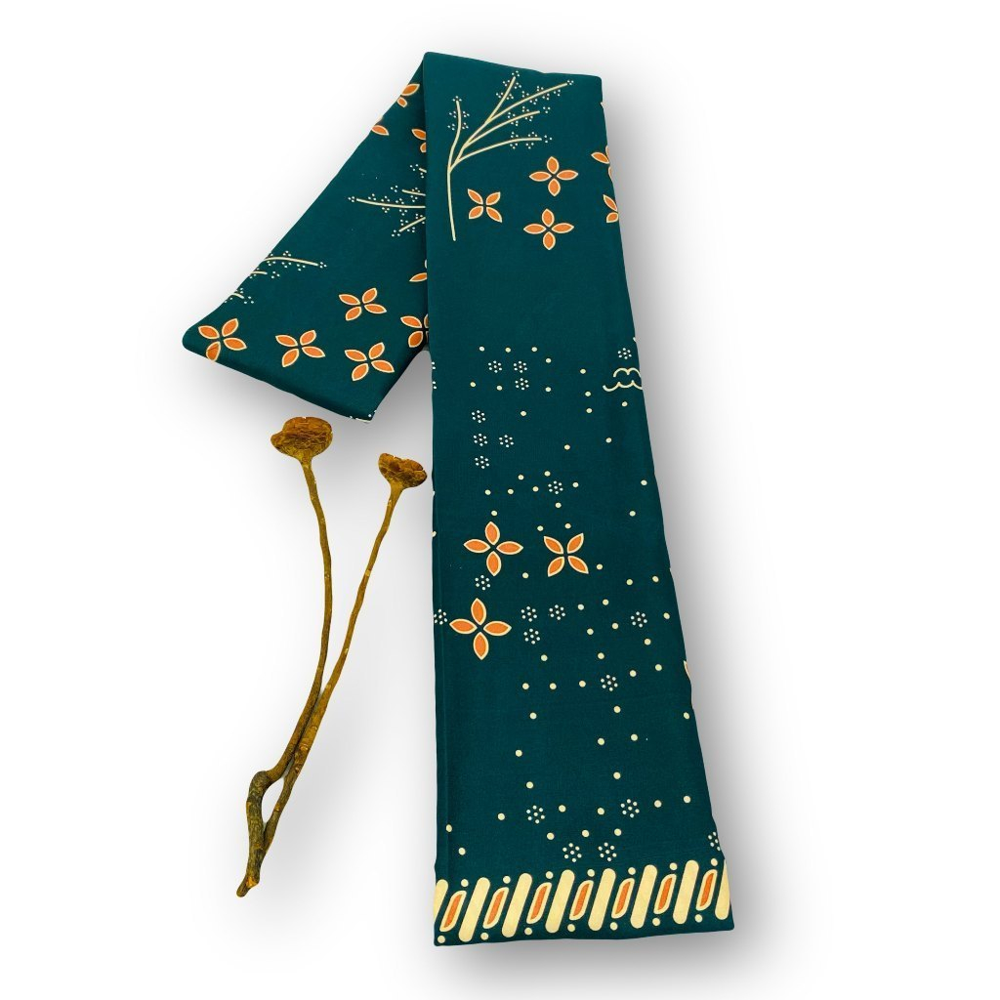
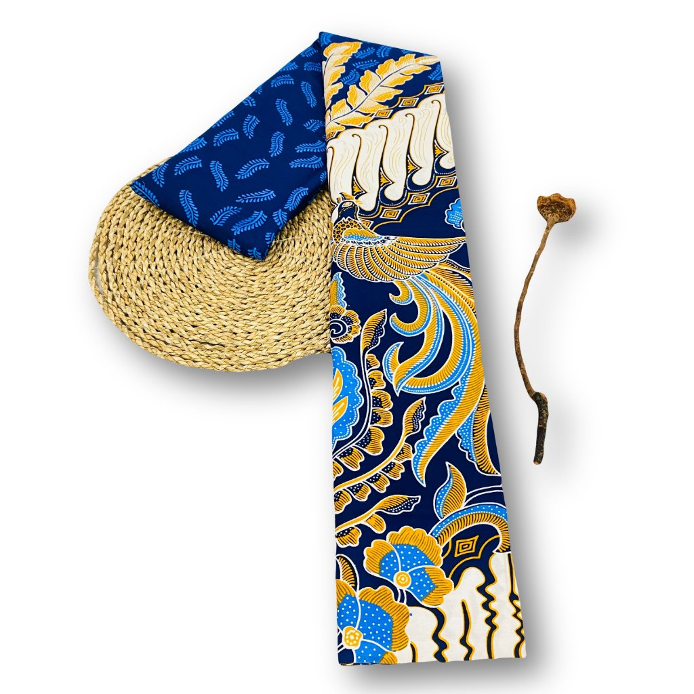
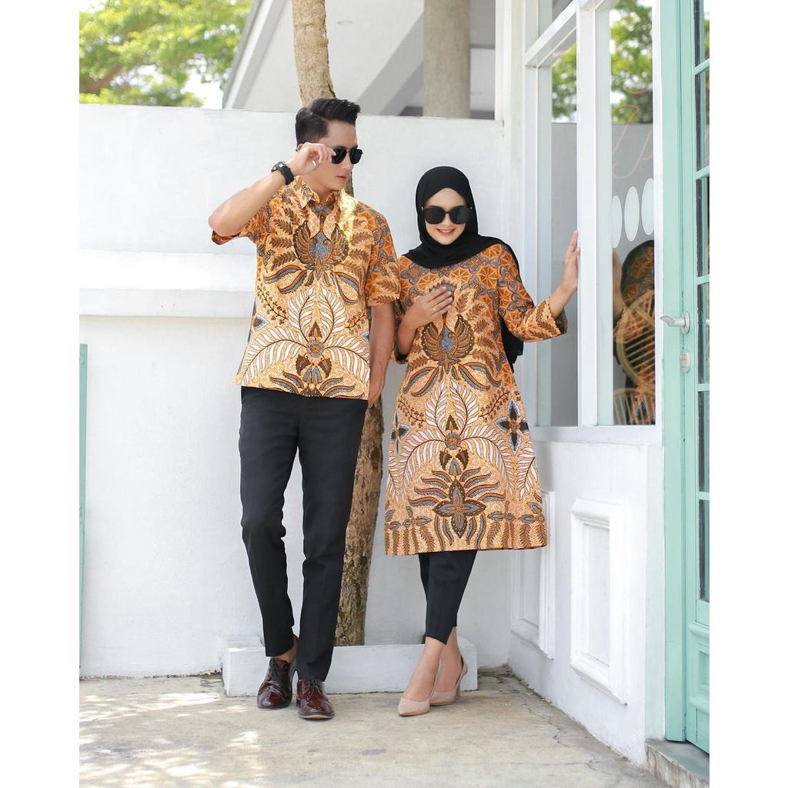
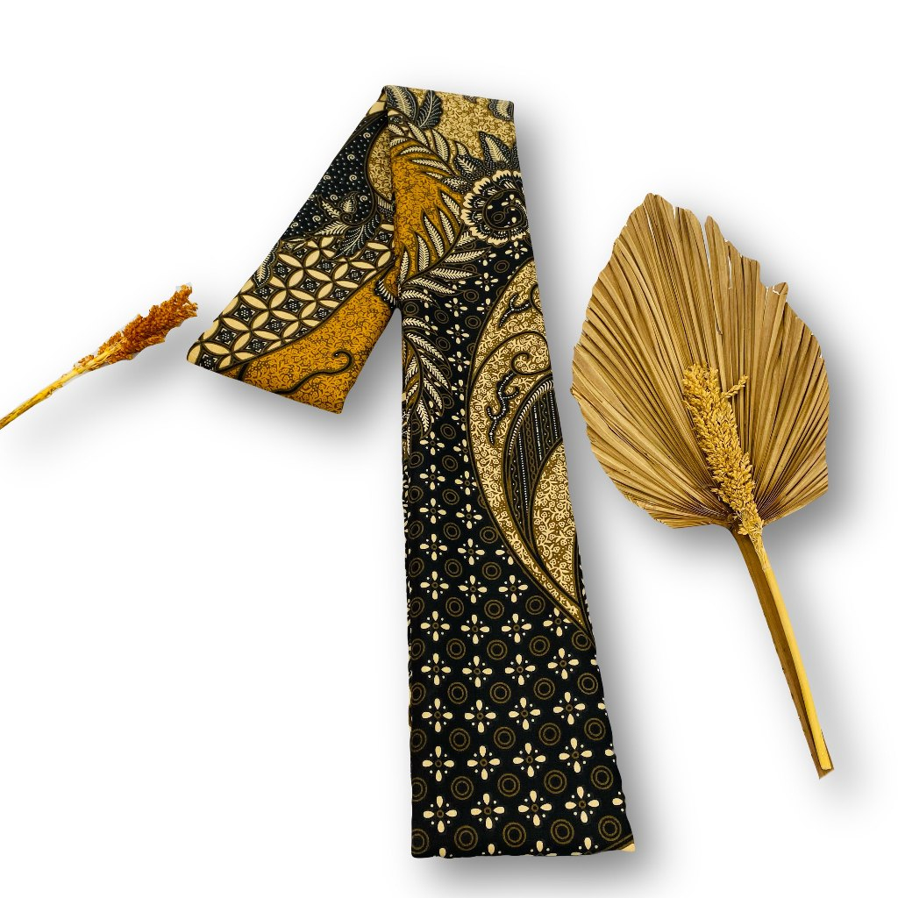
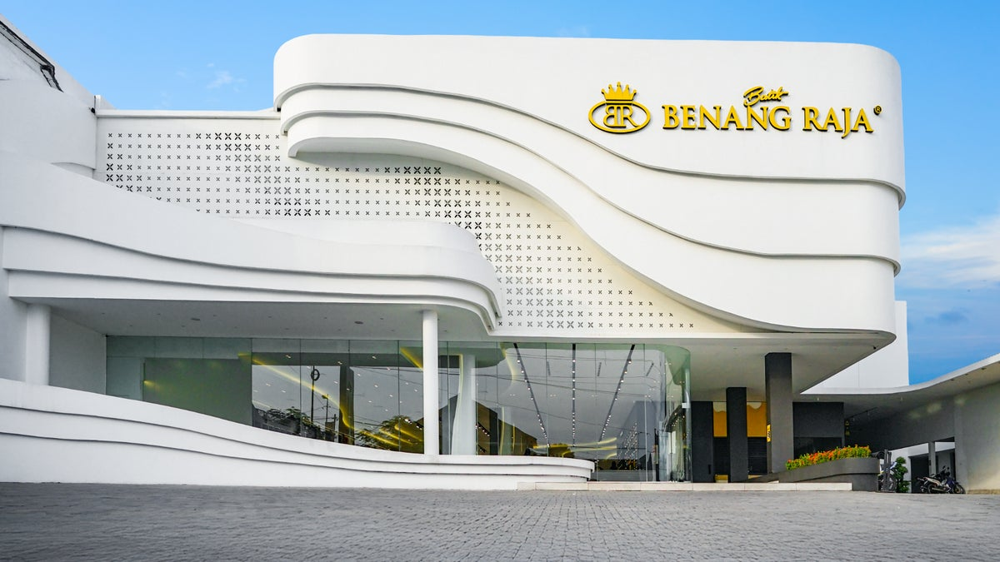

N°01★ 5.0 di Shopee
Hem Kasturi
Hitam pekat, motif merah marun. Potongan hem untuk acara dan seragaman.
SALATIGA · PEKALONGAN — SEJAK 2013
Batik asli — bukan printing — dari pabrik sendiri di Pekalongan. Eceran dan grosir harga pabrik.

N°01 — Hem Kasturi · ★5.0 di Shopee
Benang Raja berdiri akhir 2013 di Salatiga — dari satu toko menjadi 10+ toko di Jawa Tengah dan Jawa Timur, dengan pabrik sendiri di Pekalongan. Setiap produk adalah batik asli, bukan printing, dengan harga pabrik untuk eceran maupun grosir.
Visi kami tetap sama sejak hari pertama: menciptakan kebahagiaan berbatik untuk semua kalangan masyarakat Indonesia. #BahagiaBerbatik

Foto produk asli Benang Raja — dari hem, kain, hingga set couple. Ukuran hingga 5XL.
Hitam pekat, motif merah marun. Potongan hem untuk acara dan seragaman.

N°02Kain hijau zamrud bertabur emas — favorit untuk seragam keluarga.

N°03Kain primis motif Semarangan biru — lini tulis premium official store.

N°04Set pria–wanita motif payung — kompak namun tetap elegan.

N°05Hitam–emas klasik. Kain serbaguna pembuka lemari batik.
TOKO — 10+ KOTA DI JAWA
Seret untuk memutar. Ruang luas ber-AC, gantungan penuh pilihan, dan ruang ganti yang nyaman — seperti sore di toko Salatiga.
primis kombinasi tulis — kain primis motif Semarangan biru · Rp 173.750 · seret untuk orbit

BAHAN — SUMBER KEMEWAHAN
Pilih bahannya. Semua kain diproduksi di pabrik sendiri — katun, sogan, dobi, hingga batik tulis premium.
Arahkan kursor ke kain untuk memperbesar motif aslinya · sentuh di ponsel
Dari kanvas kosong hingga motif lahir — dikerjakan berhari-hari oleh tangan-tangan terampil.
Pola ditoreh di atas kain mori. Satu kesalahan di sini terbawa sampai akhir.
Malam panas ditorehkan dengan canting tembaga. Garis tidak boleh putus oleh tangan yang ragu.
Berkali-kali celup soga dan indigo. Di antara celupan, kain diangin-anginkan semalam.
Kain direbus, malam luruh, motif lahir. Diperiksa helai demi helai sebelum dipajang.
“Bahannya enak, harga terjangkau, pelayanan bagus. Pokoknya mantap.”
“Murah tapi tetap berkelas. Ukuran dari S sampai XXXL selalu ada.”
HARGA PABRIK
Harga pas sejak 2013 — dari kain Rp 35.000 hingga tulis premium. Eceran untuk keluarga, grosir untuk seragaman.
Atau datang langsung — 10+ toko di Jawa Tengah & Jawa Timur, buka setiap hari.
Kondangan, seragam keluarga, kantor, komunitas — satu motif untuk semua ukuran, dari S hingga 5XL. Isi form, tim kami yang menghubungi.